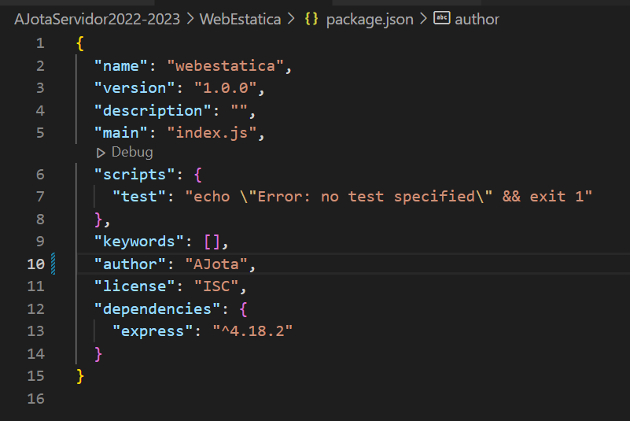

Gestor NPM
npm es un gestor de paquetes de Node.js con él los desarrolladores pueden crear, compartir
y reutilizar desde módulos o pequeñas librerías, hasta aplicaciones completas de un
extenso catálogo gestionado por la comunidad.
Cuando se instalan nuevos paquetes desde el comando npm, se hace de forma local en
nuestro proyecto dentro de la carpeta /node_modules, pero también se puede instalar de
forma global si fuese necesario.
Por defecto ya vienen instalados varios módulos (módulos nativos).
Con este comando instalaremos los módulos que se incluirán como dependencias en el
fichero ‘package.json’. npm install nombre_modulo --save
Para instalar un paquete de forma global para usarse desde cualquier lugar de nuestro
sistema de archivos y en cualquier proyecto, lo haremos mediante el comando (necesario
abrir la consola como administrador):
npm install -g nombre_modulo
Para poder usar estos módulos desde nuestras aplicaciones Node.js basta con incluirlo
mediante la expresión:
var modulo = require(‘nombre_modulo’);
Si únicamente queremos montar una librería o utilidad para ser usada durante el desarrollo
de nuestra aplicación, debemos especificar el parámetro –save-dev:
npm install nombre_modulo –save-dev
Mediante este comando se incluirá el módulo en nuestro ‘package.json’, pero en un
apartado específico para la dependencia en entorno de desarrollo: devDependencies.
Package.json
Conceptos básicos sobre NodeJS
Package.json
Cuando inicializamos el gestor npm npm init tendremos automáticamente también el fichero
package.json donde se definen las características principales y las dependencias de
nuestro proyecto con respecto a otras aplicaciones y librerías. Dentro de él se definen
características cómo:
Nombre del Proyecto,
versión,
dependencias,
autores,
licencias,
scripts, etc.
